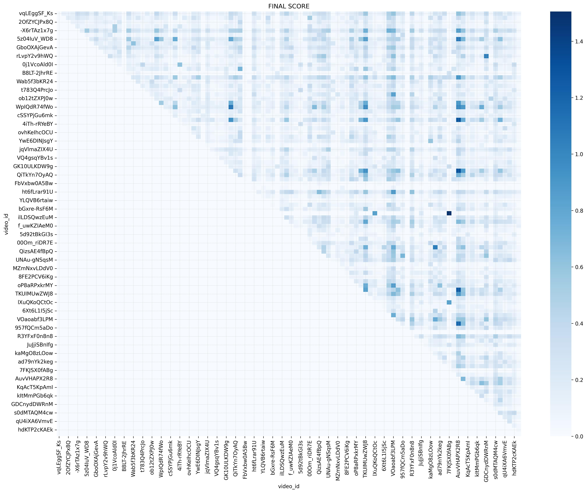
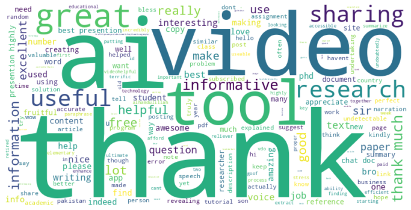
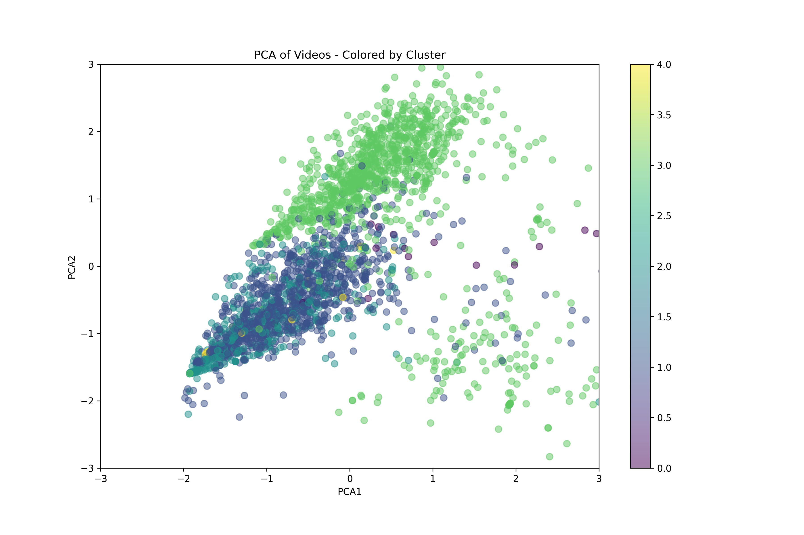

Emotion-Aware Recommendations: Building a YouTube Recommender That Understands Feelings
Ever wondered what AI fans really want to watch next? I turned 180K+ YouTube comments into personalized video suggestions using sentiment analysis + clustering.
In an era where algorithms suggest what we watch, listen to, and read, I wanted to ask a deeper question: What if we could recommend content not just based on what it's about — but on how it makes people feel?
This idea led me to build the Sentiment-Driven Video Recommendation System, a fully deployed machine learning pipeline that recommends YouTube videos using not only content similarity but viewer emotions extracted from comments and unsupervised video clustering.
Let me walk you through how I engineered it — and what I learned along the way.
Most recommender systems ignore emotions. What if someone liked a video but felt confused or disappointed? I built a system that captures emotional impact using NLP.
The Approach
El sistema calcula una puntuación final para cada video candidato usando la siguiente fórmula:
Para capturar la similitud semántica entre videos, transformé las transcripciones en vectores numéricos de alta dimensión usando TF‑IDF (Term Frequency–Inverse Document Frequency).
Pasos clave:
Limpieza de texto: lowercase, stopwords, puntuación
Vectorización (TfidfVectorizer): ngram_range=(1,2) → unigrams y bigrams; max_features → control de dimensionalidad
Resultado: Matriz TF‑IDF ∈ ℝⁿˣᵐ, donde n = videos y m = términos únicos
Base por contenido: Sirve como base del motor de recomendaciones, independiente del usuario

Matriz de similitud coseno (TF‑IDF)
Sentiment Analysis (RoBERTa + PySpark)
Para incorporar la percepción emocional de la audiencia, utilicé un modelo RoBERTa fine‑tuned en GoEmotions para realizar análisis de sentimientos multiclase.
Pipeline técnico:
Paralelización: comentarios por video procesados en paralelo con PySpark
Inferencia: cada comentario genera una distribución sobre 29 emociones (softmax)
Agregación: promedio por video → vector emocional único por contenido
Cálculo del Sentiment Score:
Sentiment Scorei = 1 + Σj wj · pij
pij: probabilidad de la emoción j para el video i
wj: peso de cada emoción positiva
Efecto: multiplicador sobre la similitud semántica; favorece reacciones positivas

Wordcloud de comentarios positivos (features de sentimiento)
Clustering (K-means + DBSCAN)
Para evitar recomendaciones redundantes y asegurar diversidad temática, apliqué clustering no supervisado sobre features combinadas de contenido, emociones y engagement.
Features utilizadas:
Vector emocional: 29D (promedio de probabilidades por emoción)
Engagement: conteo de vistas (log), ratio de likes, duración
Categoría: one‑hot/embeddings de categoría
Técnicas aplicadas:
K‑means: normalización con StandardScaler; k por método del codo + Silhouette Score
DBSCAN: detecta clústeres densos y videos atípicos (viral/de nicho)
Cluster Boost: ×1.2 si candidato y seed comparten clúster → equilibrio entre relevancia y variedad

Clústeres de videos (K‑means)
Tech Stack
Natural Language Processing (NLP)
RoBERTa + GoEmotions: Fine‑tuned model (29 emotion categories)
Text cleaning:NLTK: tokenization, stopwords, normalization
Outcome: Emotion vector per video from hundreds of comments
Data Ingestion & Enrichment
Data sources: YouTube Data API: transcripts, metadata, comments